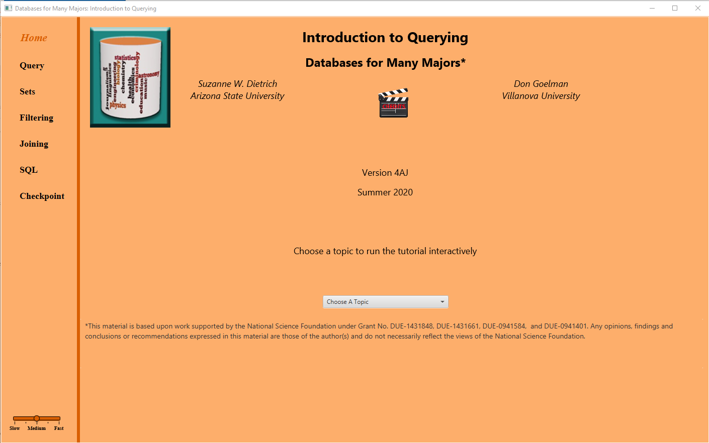

Java: Introduction to Querying Download the zip file for your operating system and extract files into a folder. Change to the bin subfolder and choose the launcher (querydblauncher.bat for Windows; querydblauncher for Mac) to start the visualization. See the FAQs for screen shots illustrating responses to the operating system's warnings to run the visualizations. |